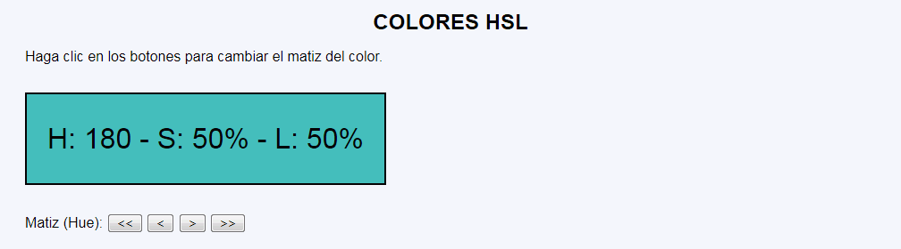
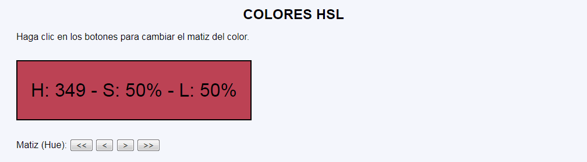

Color HSL - Ejemplo de programa
Nota: El día del examen los alumnos no tienen acceso a este ejemplo, solamente tienen acceso a las capturas del apartado anterior.
Un ejemplo de programa puede probarse en la ventana siguiente:
En este ejercicio se debe crear un programa que muestre un cuadro de color en código HSL y que permita cambiar el matiz del color.


<p class="cuadro" style="background-color: hsl(145, 50%, 50%);">
H: 145 - S: 50% - L: 50%
</p>
<p>
Matiz (Hue):
<button type="submit" name="accion" value="h--"><<</button>
<button type="submit" name="accion" value="h-"><</button>
<button type="submit" name="accion" value="h+">></button>
<button type="submit" name="accion" value="h++">>></button>
</p>
Nota: El día del examen los alumnos no tienen acceso a este ejemplo, solamente tienen acceso a las capturas del apartado anterior.
Un ejemplo de programa puede probarse en la ventana siguiente: